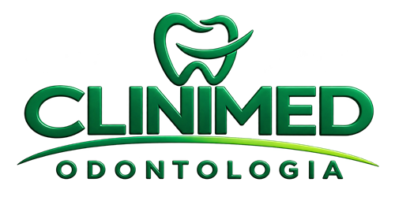
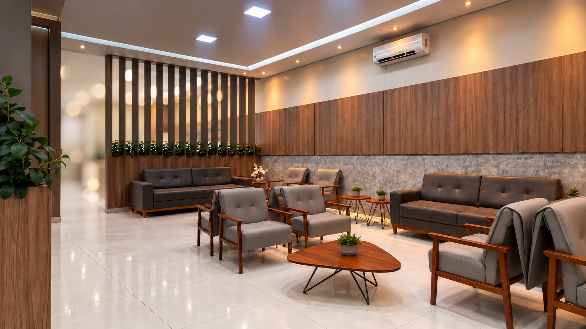
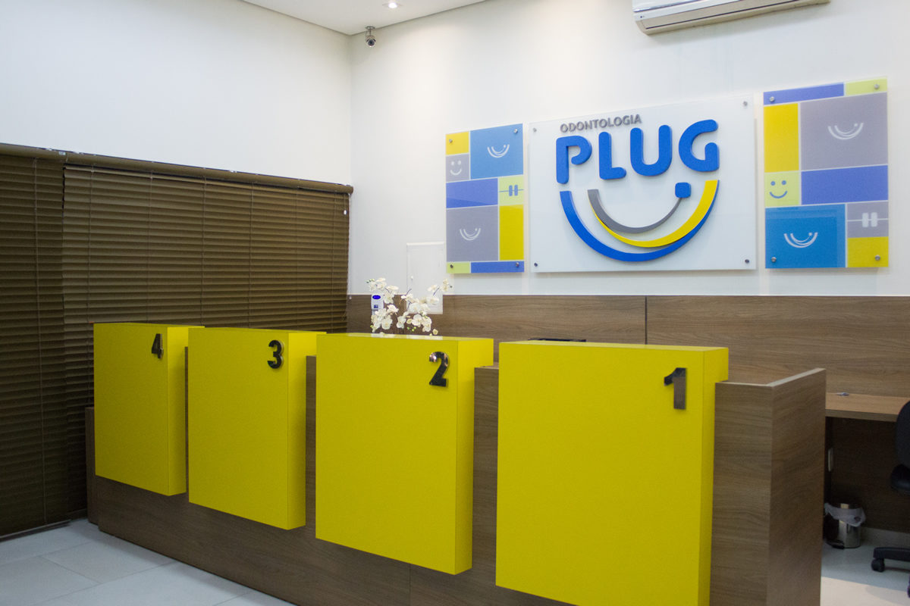

Ser bem recebido
Um ambiente organizado e acolhedor ajuda a transformar o primeiro contato em uma experiência tranquila.

Agende sua avaliaçãoExperiência do paciente
Confiança se constrói em pequenas atitudes: acolher, esclarecer dúvidas e acompanhar cada decisão com respeito.

Histórias que importam
A jornada de cada paciente é única. Por isso, valorizamos o diálogo claro, o cuidado individualizado e uma experiência tranquila desde o primeiro contato.
Aqui será possível reunir relatos autorizados de pacientes da Clinimed, preservando a autenticidade de cada história e a privacidade de quem a compartilha.

Nosso compromisso
Um ambiente organizado e acolhedor ajuda a transformar o primeiro contato em uma experiência tranquila.
Explicações claras permitem participar das decisões com mais segurança e autonomia.
Orientações e atenção às dúvidas fazem parte do cuidado, do planejamento ao retorno.
Os depoimentos identificados publicados anteriormente no site da Plug Odontologia não foram atribuídos à Clinimed nesta página sem autorização ou confirmação da continuidade da marca.
O próximo passo
Estamos disponíveis para explicar como funciona a avaliação e esclarecer suas dúvidas.